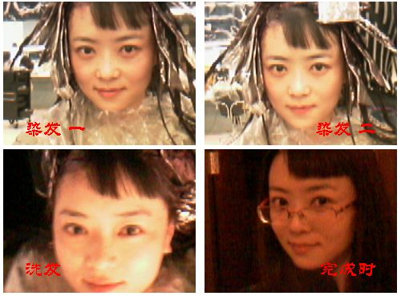

8.5个小时 @ Dec 24, 2007
我自己设计的刘海，以前曾这么剪过，回归一下~两种颜色的所谓创意染发~效果挺漂亮~
周六晚上9：30到1：30，困得眼睛睁不开,连说打住吧。第二天下午从1：30左右到5：45总算结束了。用了8.5个小时弄看似简单的发型，痛苦的煎熬。据说有位女士，晚上11：30到店里烫发，一直到早晨5点才结束。
造型师老大，这是造宇宙飞船吗？


我自己设计的刘海，以前曾这么剪过，回归一下~两种颜色的所谓创意染发~效果挺漂亮~
周六晚上9：30到1：30，困得眼睛睁不开,连说打住吧。第二天下午从1：30左右到5：45总算结束了。用了8.5个小时弄看似简单的发型，痛苦的煎熬。据说有位女士，晚上11：30到店里烫发，一直到早晨5点才结束。
造型师老大，这是造宇宙飞船吗？

« 离喧哗很远，离自己很近。 | Merry Xmas! »
21 Responses to “8.5个小时”
2007-12-24
以为烫了呢...头发盘起来更象陈逸飞画中的水乡女子了,哈哈
2007-12-24
应该烫卷
2007-12-24
显得比从前年轻许多，生活有时候需要改变。祝圣诞快乐！
2007-12-24
卷了4年了~换换吧~
2007-12-24
这么长时间，只是染发吗？
节日快乐:)
2007-12-24
还有把以前卷的头发拉直~
2007-12-24
对比前天的照片，变得简单而纯粹，像校园里恋爱中的学妹 ：）
剥离掉工作的忙碌，好淡定的笑容，抿起一点点嘴角，变成我们这一代人回归简单的写照。希望我们的心都能像你的笑容一样年轻。
看着看着连我也忍不住笑了，似乎回到年轻的从前。
2007-12-24
恩，麻辣女教师转型成了邻家学生妹，眼神多纯情奥。。
2007-12-24
长发飘逸，不错；这时间，值
内心阳光，好；正巧配着初冬
不知又有多少人咬牙切齿了:)
Merry Christmas!
2007-12-25
染色染得很好，很自然阿。喜欢。
可是那个刘海阿。。。我觉得还是以前的好，很随意很女人很知性。现在的这个好像挺僵硬的。
2007-12-25
好看, 变了个人似的。象刚旅游完回来， 神清气爽的。Forever young, both outlook and inside!
2007-12-25
阳光下拍几张吧，否则颜色好像不明显。
2007-12-26
同志，您的头发戴歪了！
2007-12-26
知性美女变成清纯学生。新发型好看这个留海比较有创意。蛮厉害哦，卷发卷了4年现今舍得拉直发啦。
2007-12-26
想不想听实话？
真的不如之前好看。衬不出脸的模样，气质出不来。
2007-12-26
喝死我了
2007-12-27
Hi Miss China, nice to meet you here,I’m from Philadelphia,US. where do you live in China? By the way,frankly, it seems that your taste is a little bit weird:)
2007-12-27
It’s difficult to say decent or not because of the different culture environment. Anyway, the “weird” is not a bad taste:) But I was frightened by the four cell phone pictures:)
2007-12-27
It’s difficult to say decent or not because of the different culture environment. Anyway, the “weird” is not a bad taste:) But I was frightened by the four cell phone pictures:)
2007-12-28
....taste is a little bit weird:)
关于taste，100个人有100种taste和观点，不强求理解接受，只求宽容即可，您说是吗？
我住在南京。
2007-12-29
这是常识
Leave A Reply
存档只读，评论已关闭。